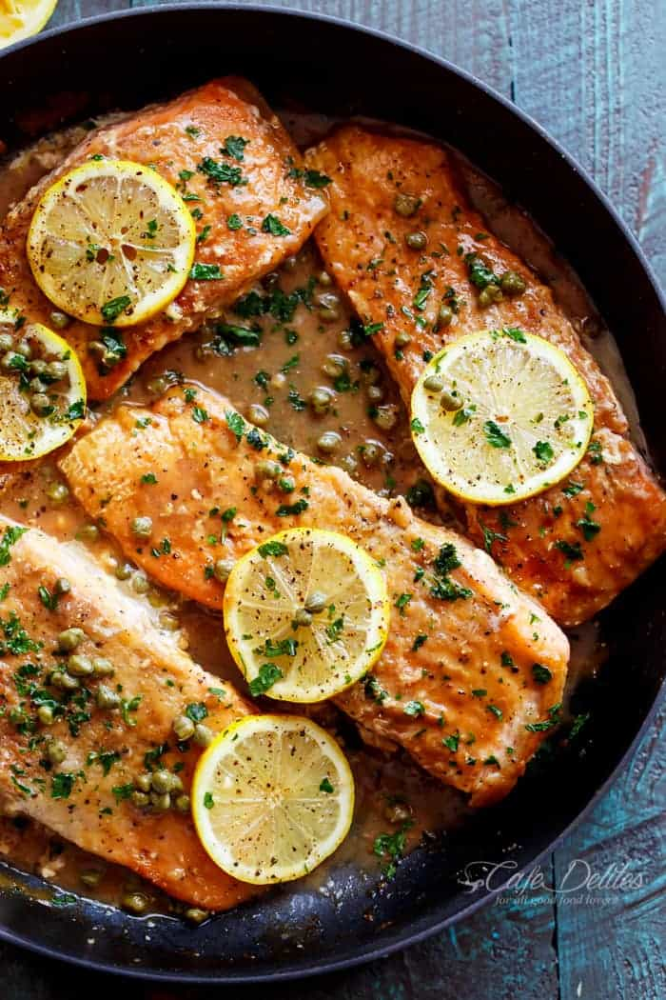

Quick Salmon Piccata

Description
Who loves gourmet cooking that doesn’t take hours to create? I certainly do! And my guess
is that you do too. There isn’t anything I enjoy more than being able to cook and serve a 5 star
restaurant worthy meal that my family and friends can enjoy – without having to spend every last
penny in order to do so. That’s one of the reasons why I adore salmon piccata – it’s simple, delicious
and so easy to make – and just about everyone who tastes it thinks I picked it up from our favorite
local Italian joint on my way home from work.
Salmon piccata is practically identical to the ingredients you’ll find in chicken piccata, except, of course,
the obvious: rich, buttery and flaky salmon fillets. Once you taste and prepare it, you’ll never be able to
live without it. Piccata is an old world Italian classic typically made using veal. These days, chicken has
taken over as it’s more famous and popular sibling, with salmon a very close second.
INGREDIENTS
- 4 (3ounce) salmon fillets, skin removed
- salt and ground black pepper to taste
- 1/4 cup all-purpose flour
- 2 tablespoons vegetable oil
- 1/4 cup dry white wine
- 1 teaspoon finely minced garlic
- 1/2 cup chicken broth
- 2 tablespoons lemon juice
- 1 tablespoon capers, drained
- 2 tablespoons butter
- 1/2 lemon, sliced
STEPS:
-
Season salmon fillets with salt and pepper. Pour flour in a bowl and dredge salmon,
shaking off the excess.
-
Heat oil in a skillet over medium heat and cook salmon fillets until browned on both
sides, about 3 minutes per side. Transfer to a plate and keep warm.
-
Pour wine into the skillet and scrape browned bits from the bottom. Add garlic and
cook until garlic is fragrant and slightly brown and liquid is reduced by half, about
1 minute. Add chicken broth, lemon juice, and capers. Bring to a boil while stirring.
Stir in butter until melted. Return salmon fillets to skillet and spoon sauce over them.
-
Cook, turning fillets once, until salmon is cooked through and flakes easily with a fork,
about 4 minutes. Serve salmon with sauce poured over it and garnish with lemon slices.